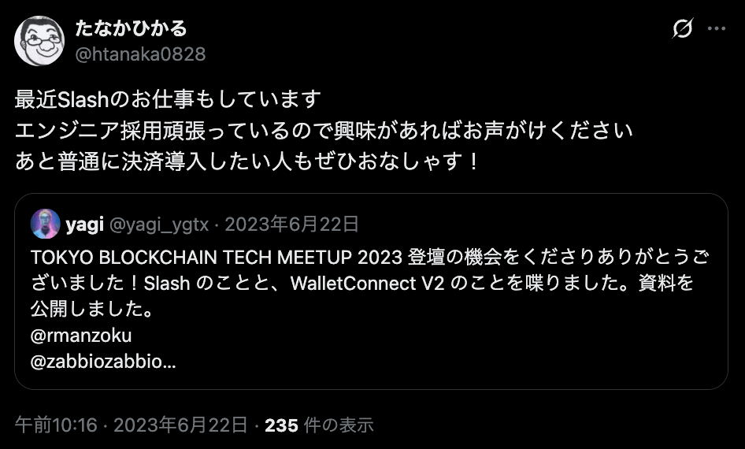
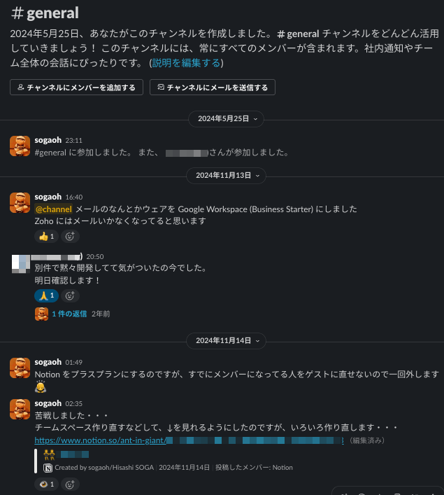
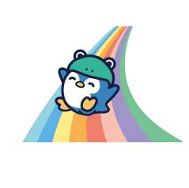
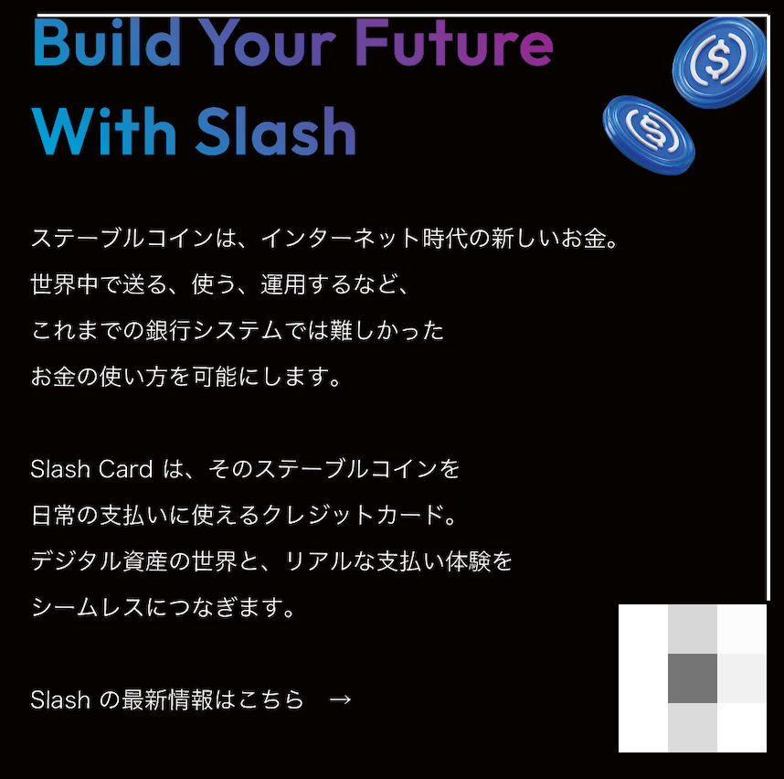
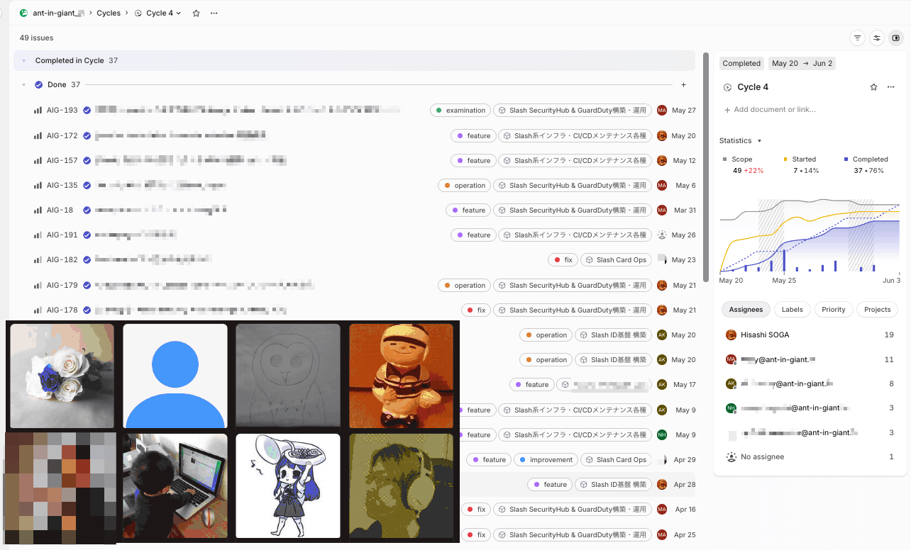
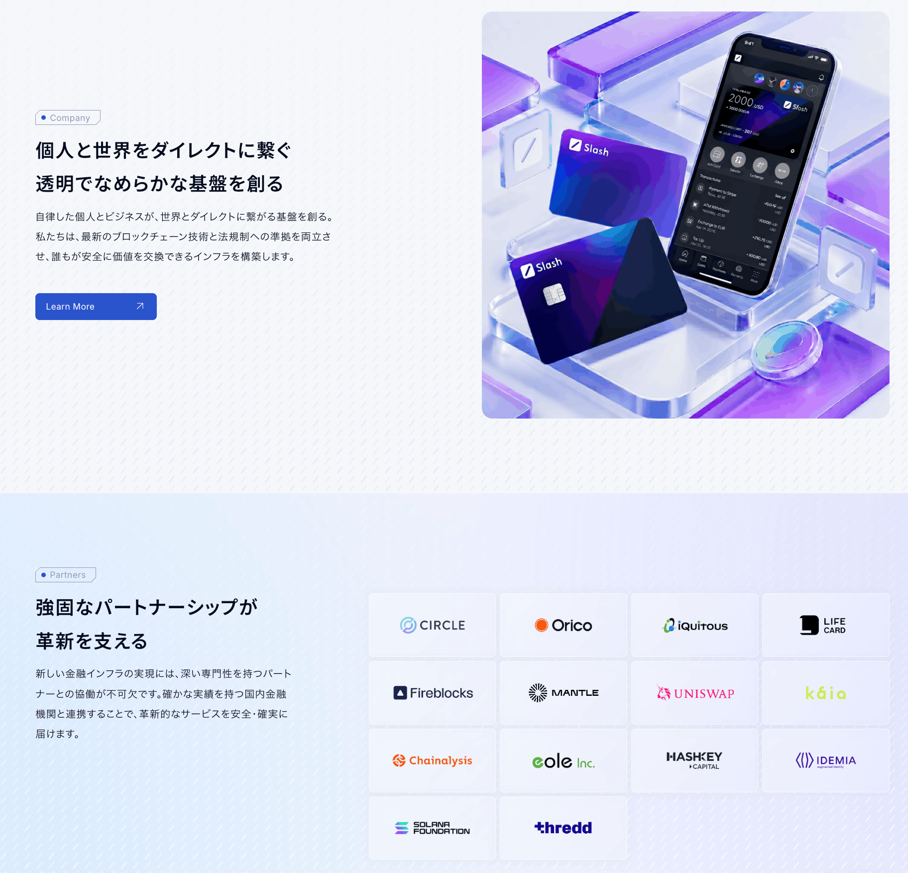

7/23(木) Tamachi.sre#5
@sogaoh.bsky.social
sogaoh: Hisashi(央) SOGA |
・ant-in-giant G.K. 代表社員 ('22/03〜) ・複数社で業務委託するクラウドインフラ仕事人 ・SRE NEXT Assoc. 理事 ('22/01〜) ・「SRE を浸透・発展させる」活動やっていきます ・Slash Vision Pte. Ltd. SRE ('23/07〜) ・Slash Card のインフラ構築・保守を主導 ・なんと Tech Lead になりました |








※: 2025/6/30時点のプレスリリース


お気づきの点あれば
sogaoh@slash.vision まで